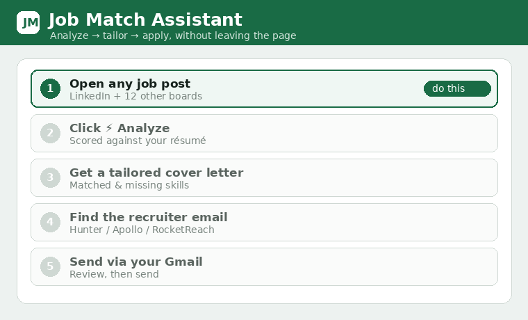
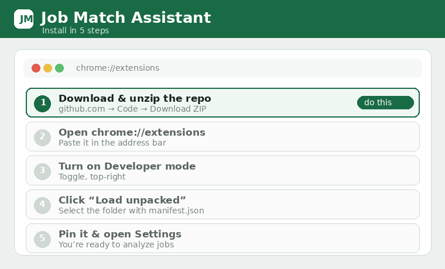
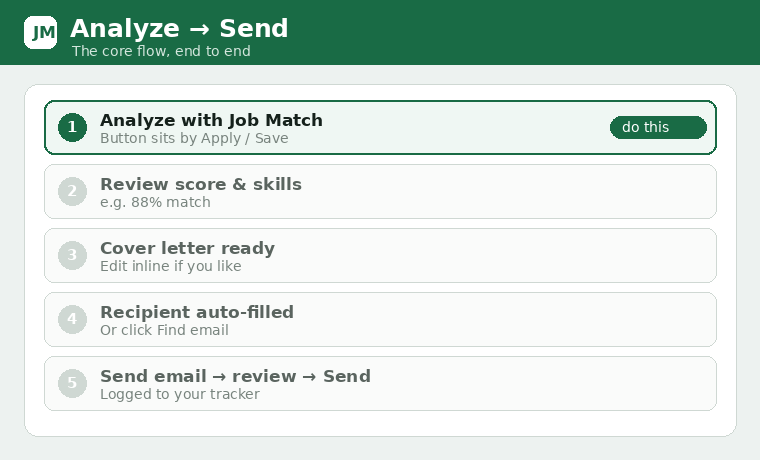
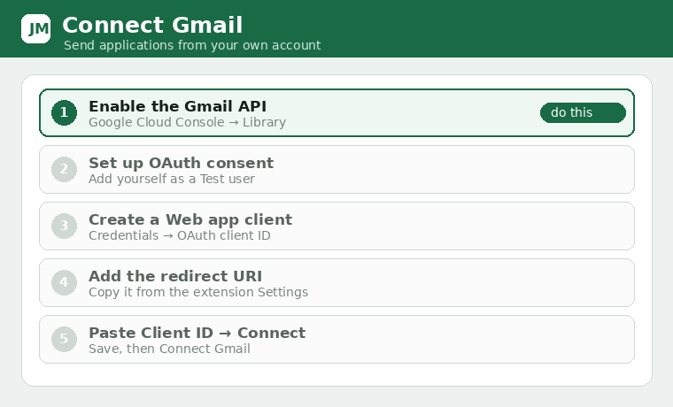
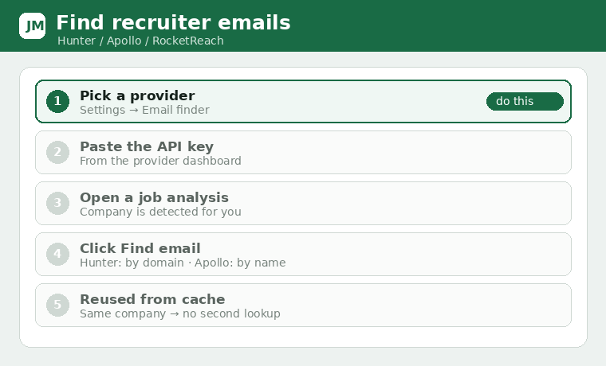
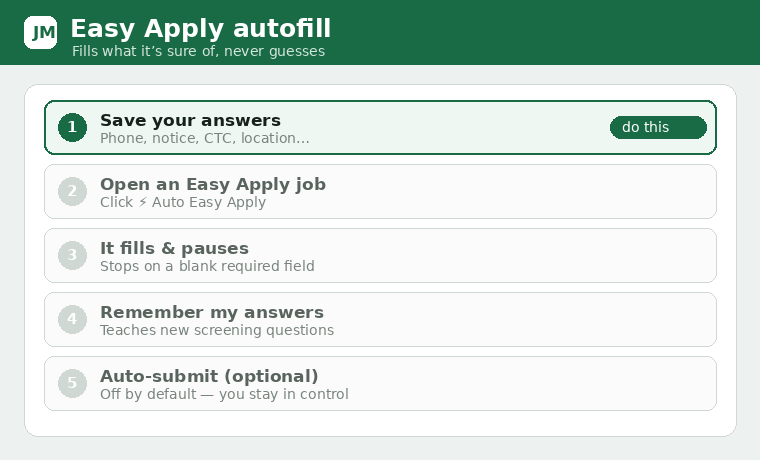
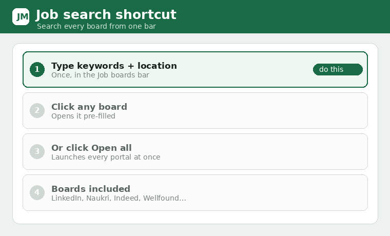
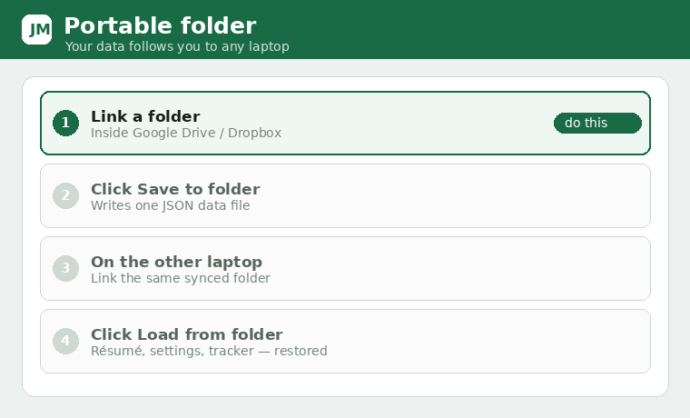

A free, open-source Chrome extension that scores any job against your résumé, writes a tailored cover letter, finds the recruiter’s email, and sends the application over your own Gmail — without leaving the page.

Score a job against your résumé with matched/missing skills — local, OpenAI, or your ChatGPT/Gemini tab.
A tailored, ready-to-send letter grounded in the posting and the company’s own description.
Review-then-send from your own account, or save a draft. Recipient auto-filled from the post.
Hunter, Apollo or RocketReach — cached locally so the same lookup never costs twice.
LinkedIn autofill that stops rather than guess, and learns new screening questions.
Search a dozen job boards from one bar, and pull jobs out of your Gmail job alerts.
Every application logged locally, with CSV export and backup/restore.
Link a Drive/Dropbox folder once and your data follows you to any laptop.

chrome://extensions.manifest.json.Download the ready-to-load ZIP then unzip and Load unpacked.
Or clone it:
Click Analyze on any job, review the score and cover letter, confirm the recipient, and send over Gmail.

Use your own Google account via an OAuth Web-application client. Review-then-send only.

Hunter by domain, Apollo/RocketReach by name — results cached locally.

Fills what it’s sure of, pauses on blanks, and remembers new answers.


Link a cloud-synced folder; load it on any laptop to restore everything.

Your résumé and the job text go only to the provider you pick for that run (OpenAI, or your own ChatGPT/Gemini tab); local mode sends nothing. Email is sent only through your own Gmail after you confirm. Nothing is sent to the project authors. Details →